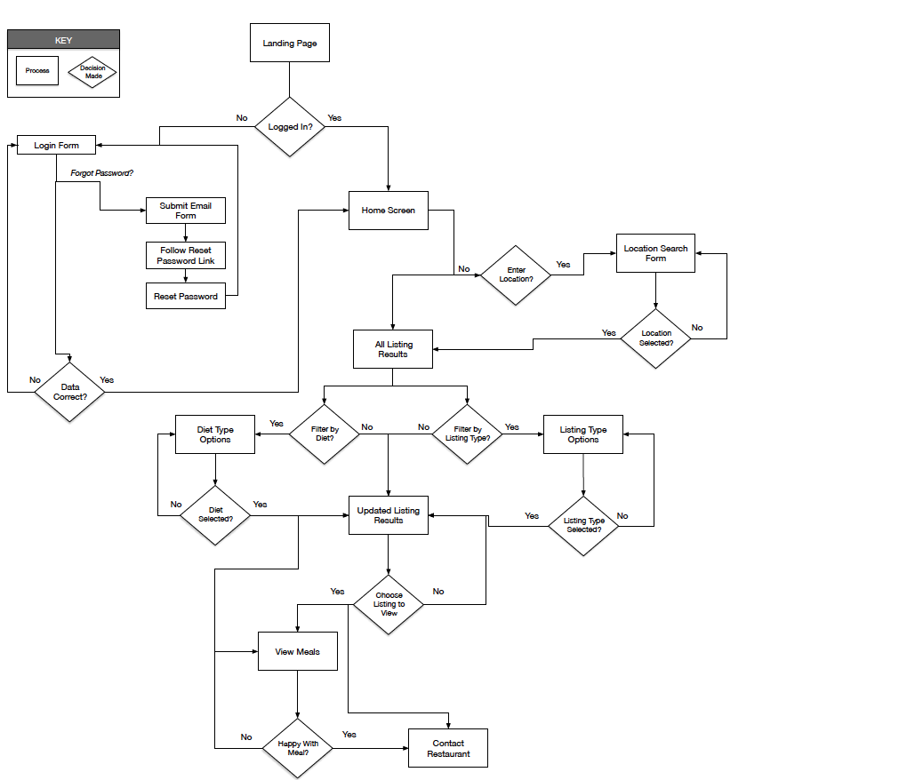

'Healthy Move' is a location based recommendation app that I designed as part of my CareerFoundry Certificate in UI design course. The aim of the app is to locate places nearby for people that are diet conscious and also for those that have a particular dietary requirement such as Gluten Free or Vegan.
The app was created following the user centered design process including:
The main tools used for this project were:
From conducting online research it became evident that Irish people are becoming more health conscious and eating habits are changing. Veganism and vegetarian diets are becoming more popular and likewise more people are looking towards healthier options in general. There is a gap in the market for an app that would combine various dietary requirements and needs... and so be appealing to both athletes and those with a specific dietary plan.
I conducted a competitive analysis on two leading dietary apps - 'Happy Cow' and 'Find me Gluten Free'. For each of the apps I looked at their overall strategy, market advantage and their marketing profile. I also conducted a SWOT analysis identifying Strengths, Weaknesses, Opportunities (gaps in the apps that I could take advantage of in my app) and external threats that the apps could be facing.Lastly I conducted a UX Analysis of the apps - analysing their usability, layout, navigation structure and compatibility.
An app designed specifically for those with the requirement of being a vegan or vegetarian. Their tag line is “Find vegan options worldwide”. The app is set apart from competitors as it’s one of the few apps available specifically dedicated to finding veggie and vegan restaurants.
| Strengths | Weaknesses | Opportunities | Threats |
|---|---|---|---|
| One of the few apps specifically dedicated to finding vegan and vegetarian restaurants. | To use the app on iOS you have to pay a once off fee as there is no free version. | More information could be provided on meals available such as a photo and the nutritional content of each. | Vegan recipe apps that provide recipes that users could make themselves. |
| Well established brand and the number 1 vegan app for restaurant searches on iOS. | The app only gives a general overview of the vegan or veg meals provided by the restaurants | An additional search option on the homepage could filter for low carb or low fat options. | Restaurant finder apps such as ‘Forks over Knives’ that include vegan options as part of their listings. |
An app designed specifically for those with the specific requirement of having a gluten sensitivity and so can’t eat foods containing gluten products. The app is set apart from competitors as it’s one of the few apps available specifically dedicated to finding restaurants that offer gluten free products. It serves the purpose of making it easier and quicker for people to find gluten free food when compared to other restaurant search apps.
| Strengths | Weaknesses | Opportunities | Threats |
|---|---|---|---|
| Large customer base of over 3 million global users that provide reviews of restaurants that offer gluten free products. | There are not that many local listings for the Irish market, food chains are from the US only. | More information could be provided on meals available such as a photo and the nutritional content of each. | More reviews need to be added for users in specific regions such as Ireland or a rival competitor could enter the market that could have more regional users and reviews.. |
| Has a strong presence on social media with over 55k likes on Facebook. | The app only gives a general overview of the gluten free meals provided by the restaurants, no nutritional content or photo. | Additional filters could be included as well as more local listings and reviews from local members. | On the free version of the app there are large ads to sign up to premium that are annoying as they appear in the middle of search results as the user is scrolling, offputting for users. |
The next research phase was to conduct a number of 30 minute interviews with potential users of the new app. Interviews were initially arranged by emailing potential respondents to arrange a suitable time and method for the interview. Interviews were conducted via Skype as well as in person.
I developed a hypothesis to use as the foundation for my research.
"My hypothesis is that there is a market for an app that people who have specific dietary requirements will use to find suitable places to eat meals in or buy food from. The app will be an easier, simpler and more convenient way for this market to find meals and snacks in comparison to using traditional apps. In addition my app will provide provide nutritional information and pictures of the meals available".
I developed a number of interview questions based on my objectives
The respondents all have an interest in the nutritional composition of the food they will be eating. This could be macro nutrients such as protein composition but also calories and sugar and salt levels. Vitamins are important also. They do not seem to be aware of apps that could help them find their requirements but are relying on web research or word of mouth.
Some Vegan alternatives seem to be based around processed food that can be high sugar and salt which aren’t that healthy so having Vegan meals that also show nutritional content would be an important feature to the app.
The respondent that has Celiac disease mentioned that he didn’t know of any apps that would find him GF meals so he has to ask the staff members in the restaurant. He mentioned that he brings his own bread sometimes for meals and was once asked by a restaurant to sign a waiver before eating so they were covered by insurance in case there was Gluten in his meal.
Having a photo of the meals was mentioned by all as well as having nutritional information on the meals. Different groups would have different nutritional goals such as Vegan, Gluten Free or High Protein, Low Carb.
From analysing the data gathered from previous research a clear picture of the apps potential users emerged. User personas were then developed based on the patterns and similarities between my interview participants. These personas help to understand and build empathy with the user and will inform future design decisions.

Based on all the information learned in the research stage as well as assessing what features the app would provide for users I mapped out the primary screens of the app from login to end goal. A number of user stories were created that led to the development of user flows. It was important to make the user journey flow intuitively so it was a simple process from beginning to end. A sample of some of the user flows that were created can be viewed in this section.
"As someone that has a specific dietary requirement I want to be able to find meals in restaurants that meet my needs so that I know they have suitable food available before I go there"
“As someone that has a specific dietary requirement I want to be able to find suitable food when I’m on the go so that I don’t break my diet”

“As someone that has a specific dietary requirement I want to be able to easily find a restaurant where I’ve eaten before so that I can add it to my favourites list"


The user flows formed the foundation for initial design sketches. The 'crazy 8s' rapid sketching method was used whereby an A4 sized
piece of paper is folder into 8 squares and a 60 second timelimit per square is given to sketch out initial ideas. Different iterations
of sketching were used to develop ideas for the needed screens and features. A dot vote was used to mark the best ideas from the sketches.
The dot voted designs were pooled together to create a paper prototype for the app. Prott was used to develop the interactive paper prototype.


The paper prototype was tested recruiting suitable repsondents to participate in the testing.The goal was to test teh usability of the app. I wanted to ensure that the potential users can navigate through the app and accomplish the tasks that I have set for them and also to identify any pain points or areas of tension that may need to be redesigned.
There were some useful insights that were discovered from analysing the feedback from the tests. The feedback lead to a redesign of the diet filter buttons on the homepage so that they were more intuitive and visually pleasing. Horizontal scrolling buttons were to be used with an additional filter button that would open a separate screen of extra filter options. It was also decided to redesign the footer navigation reducing complexity so that there would be only three main sections needed - Explore, Map and Profile. The Explore screen would allow users to search by listing name on the same screen as being able to filter by diet requirement and also change their location using a drop down menu.
Apps and websites were researched online to get inspiration for the look and feel of the new proposed app. Websites such as Dribble, Behance, Pinterest and Instagram were researched along with various online design related articles. The exisiting apps were researched under the headings of 'Colour', 'Layout' and 'Type/Icons/Logos'.


A moodboard was created to demonstrate the proposed design look and feel. Two varying styles of moodboard were designed as can be viewed below. Certain ketwords were used to help project the feeling and idea behind the design styles. One style uses green as the primary colour with yellow as an accent and a ligher shade of green to support as well as shades of grey. An alternative design uses a brighter orange as the primary with bright green as an accent and supporting colours of dark green and grey. It was decided to use the first moodboard as the colour scheme for the app as it was felt that the colours were more appropriate and the alternative moodboard was possibly more suited to a fruit drink or juice bar as opposed to a health food app.

Once I had figured out the main user flow and screens for the app I created a number of sets of wireframes to give a better idea of how the information and functional elements would be laid out. These were then iterated on until I settled on a final set of wireframes which were later used as the basis for the visual design of the app. During this process my tutor and was consulted for feedback. Once the final screens were designed a style guide was also created as a reference to the Typography, Colour Scheme, UI Elements, Imagery and Icons used in the design of the app that should be followed if there are to be any amendments or additions to the app. In addition to wireframes sample responsive screens were developed for iPad and Laptop. The images below show mid to high fidelity screens that were created.


I have studied Marketing and have also worked in Marketing Analytics so I believe this background helped me in the early phases of the project to formulate research questions and to conduct the user interviews and the development of the online survey and the user personas. Also testing a low fidelity wireframe sketch early in the process proved beneficial as it helped shape future design decisions. Online research to gather inspiration and the development of a moodboard also helped to create the final design look and feel.
It took me a few attempts at the crazy 8 design sprint methodology before I was able to start generating design ideas, coming up with different looks for the same screen was soemthing that was a challenge also. The user flows were an area that I found to be quite tricky and time consuming but spending time getting the user flows correct after a number of iterations helped with the design of the wireframes at a later point in the process.
I moved from low fidelity wireframes to high fidelity adding a lot of detail and creating finished mockups before getting additional feedback from users. The feedback from the user tests for the final screens was mostly positive, any constructive feedback was reviewed and amendments were made. In future however I need to remember to move to mid fidelity and test with users before adding additional detail as the final screens should be based on additional user feedback throughout the process.